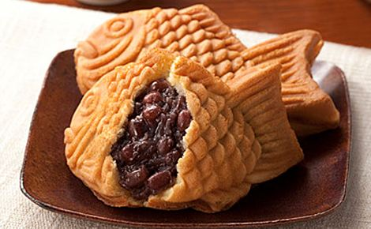

Японская сладость таяки
Описание
Таяки, дословно — «жаренный морской лещ». Начинкой является бобовый джем, жарится в форме (формочка в виде рыбки).
Ингредиенты
- Мука – 1,25 чашки
- Сахар – 1 / 2 чашки
- Сода – 2 чайные ложки
- Вода – 3 столовых ложки
- Яйца – 3 штуки
- Мед – 2 столовых ложки (по желанию)
- Бобовый джем – 1,5 столовых ложки
Рецепт

Просеять вместе муку, разрыхлитель и кукурузных крахмал. Взбить сахар, мёд и яйца до пенистого состояния, добавить муку. Взбить до получения однородной массы. Слегка подогреть формочку и смазать её маслом.
Налейте немного теста, сверху положите столовую ложку пасты анко и залейте тестом чтобы оно заполнило все полости. Плотно закройте крышку. Готовить на среднем огне 30 секунд, потом переверните и жарьте минуту. Повторите. Таяки готовы когда они покрываются золотистой корочкой, а формочка легко с них снимается (это происходит примерно через 4 минуты). Подавать сразу же. Японцы делают таяки не только с ANKO (Анко, паста адзуки, сладкая бобовая паста — уваренные с сахаром или мёдом бобы фасоли узловатой.), но и с шоколадом, кремом и пикантными начинками.
Галерея
{kind=link}
{kind=link}
{kind=link}